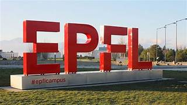
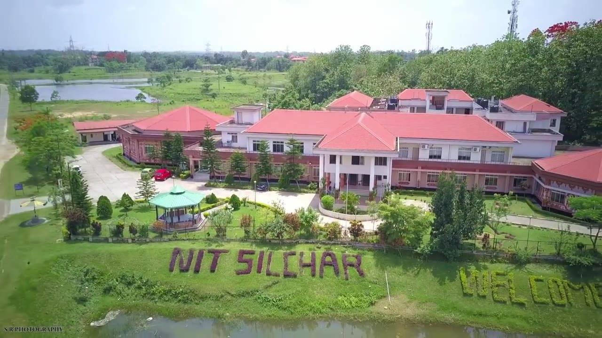
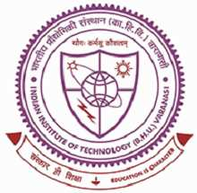

Research Experience
Research Scientist
Sept 2025 – PresentConducting research across two distinct verticals: Scientific Machine Learning (SciML), where I integrate physics priors with AI for design optimization, and Generative AI, where I focus on hallucination detection and reliability in LLMs for non-physical domains like healthcare.

Research Collaboration
July 2025 – PresentBuilding a foundational framework for the inverse design of granular architected materials using Generative AI. This work unifies granular physics with large-scale generative learning to enable data-efficient discovery of mechanically programmable systems.
Research Associate
June 2023 – July 2025Developed the EUCLID framework for inverse design of heterogeneous nonlinear materials. Built physics-informed pipelines integrating FEA and PDE solvers. Presented at ESMC 2025 (Lyon).
Investigated wave control in non-reciprocal lattice systems. Built an active experimental setup using motor-driven pendulums and implemented real-time stiffness modulation using C++ and Python.

Undergraduate Researcher
Jan 2023 – May 2023Conducted finite element modeling of laminated composite plates under thermal and dynamic loading, extending the work to include hygrothermal coupling effects.

Summer Research Intern
Summer 2022Developed a MATLAB-based algorithm for estimating dynamic parameters of structures under seismic excitation.
MATLAB Seismic WavesTeaching & Invited Talks
Lecturer
Jan 2026-PresentCreating a specialized curriculum on AI for Continuum Materials, designed to demystify the integration of deep learning methods with Physics. The series will demonstrate how to solve continuum and discrete systems using Physics-Informed Neural Networks, Universel Differential Equations and Generative AI Models.
Speaker
Dec 2025-PresentPresented my research journey and publication history as a case study for aspiring researchers. Dissected strategies for identifying high-impact problems and building a coherent academic portfolio.
Guest Lecturer
Nov 2023Delivered an invited technical lecture on non-reciprocal metamaterials for the course Wave Propagation in Designed Materials. Covered dispersion relations and the Skin Effect in mechanical lattices.